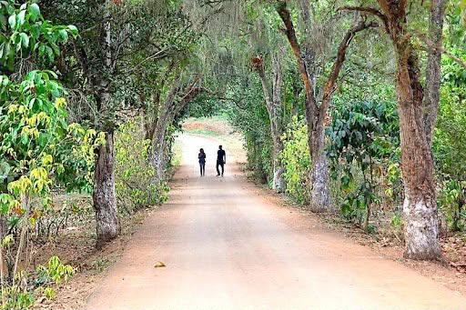

O Cuanza Norte é uma província de Angola caracterizada pela sua riqueza histórica, agricultura e importância estratégica ao longo do rio Cuanza.
Ndalatando
20.426 km²
659.097
Kimbundu / Português

Calulu de carne seca ou peixe fresco com funge de bombó.
Fortaleza de Nossa Senhora da Conceição de Kambambe e o Centro Botânico de Quilombo.
Cazengo (Ndalatando), Ambaca (Camabatela), Banga, Bolongongo, Cambambe (Dondo), Golungo Alto, Ngonguembo (Quilombo dos Dembos), Lucala, Quiculungo e Samba Caju.